Administrer les réseaux et l'Internet
(Cliquez pour voir les détails)Connecter les entreprises et les usagers
(Cliquez pour voir les détails)Créer des outils et des applications
(Cliquez pour voir les détails)Administrer et gérer un projet informatique
(Cliquez pour voir les détails)Surveiller et Sécuriser un Système d'Information
(Cliquez pour voir les détails)Bloc 1 : Administrer les réseaux et l'Internet — Niveau 3
Contexte
Projet de transformation "Scale-Up 80" nécessitant la refonte totale de l'architecture vieillissante d'une entreprise, et interconnexion de deux sites distants (SAÉ 3.03).
Objectifs
Établir une topologie réseau hiérarchique, segmenter logiquement les flux pour des raisons de sécurité, et assurer un routage dynamique capable de s'adapter automatiquement aux pannes de liens.
Problèmes rencontrés
Le réseau existant était "à plat", générant des tempêtes de broadcast (ralentissements) et permettait à n'importe quel employé d'accéder aux serveurs de R&D. L'interconnexion de sites distants posait le problème de la gestion des routes sur un réseau public instable.
Solutions mises en place
J'ai découpé le réseau en créant des VLANs dédiés par métier (Admin, Production, Vidéo) pour réduire la taille des domaines de diffusion. Au niveau de la couche 3, j'ai implémenté le protocole de routage OSPF. Un NAT en mode overload a également été configuré pour masquer le plan d'adressage privé.
Résultats
L'infrastructure est devenue hautement évolutive (scalable). Les flux critiques sont isolés, la bande passante est préservée, et la tolérance aux pannes est assurée de manière autonome.
Preuves
- SAE3.03 - Pepiniere_Multi-Sites.pdf : Configuration OSPF et NAT.
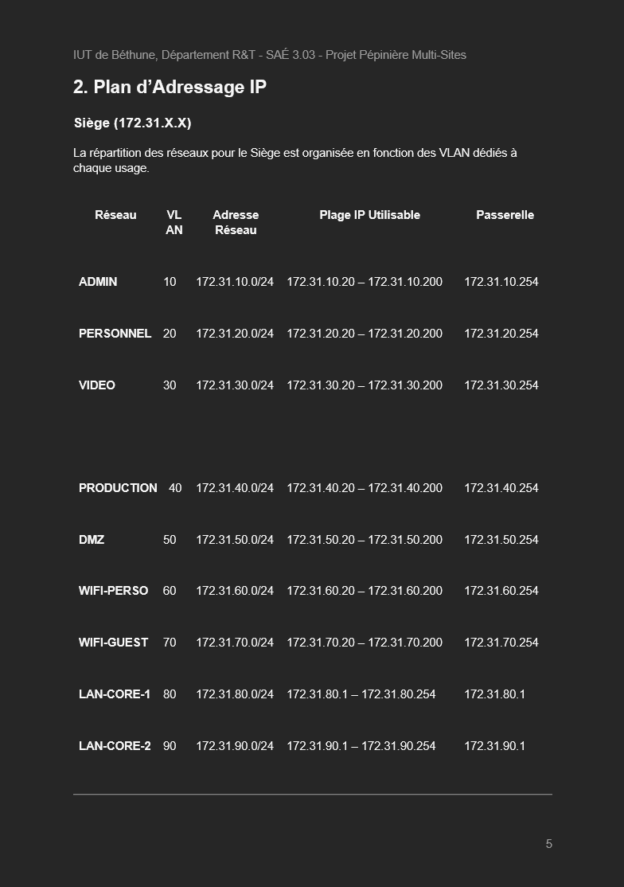
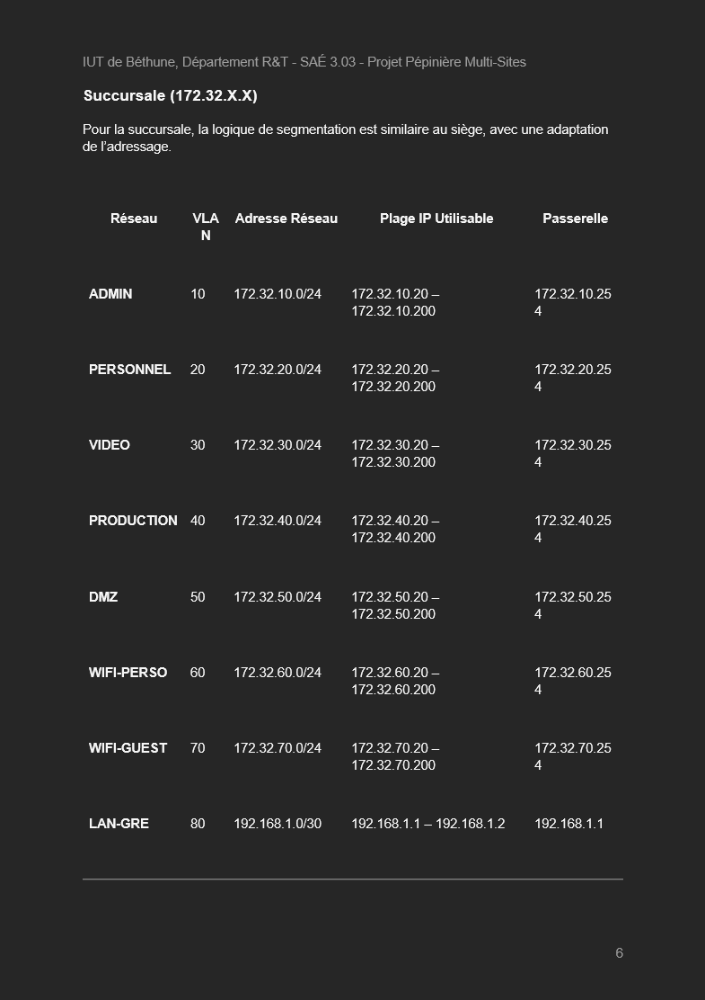
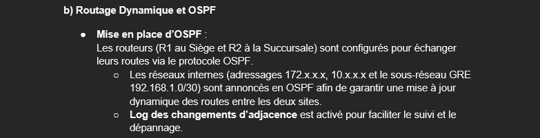
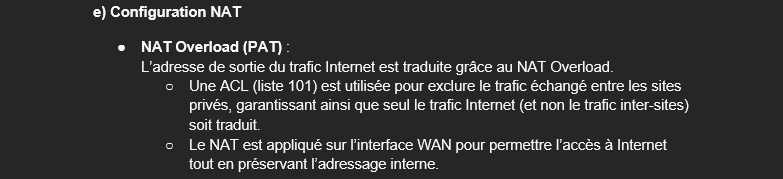
- SAE5.02 - Conception_SI_Scale-Up_80.pdf : Schéma d'architecture logique détaillant la segmentation.
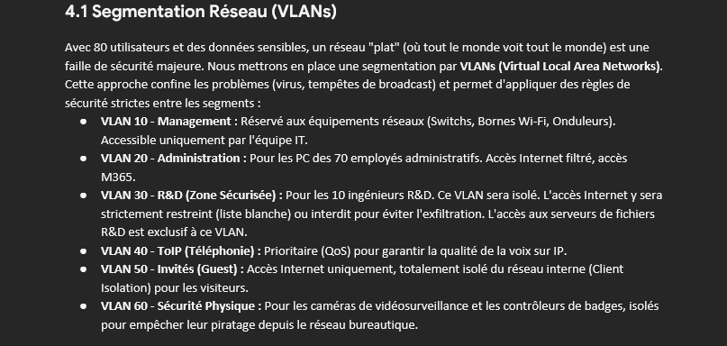
Contexte
Sécurisation des données du projet "Scale-Up 80" et conception d'une architecture serveur résiliente pour héberger 1000 machines virtuelles étudiantes (SAÉ 501).
Objectifs
Garantir qu'en cas de sinistre majeur (incendie, attaque par rançongiciel, panne), l'entreprise ou l'université puisse redémarrer son activité sans perte de données critiques.
Problèmes rencontrés
Le stockage local traditionnel représente un point de défaillance unique (SPOF). Par ailleurs, la sauvegarde de centaines de VMs génère des coûts de stockage exorbitants.
Solutions mises en place
J'ai défini une politique stricte basée sur la règle du 3-2-1 (3 copies, 2 supports, 1 externalisée via Azure File Sync). Pour l'infrastructure des TP (SAÉ 501), j'ai conçu un cluster de 3 nœuds sous Proxmox VE utilisant des "Linked Clones" pour ne sauvegarder que les différences (deltas).
Résultats
Un PRA (Plan de Reprise d'Activité) validé permettant un redémarrage rapide. L'empreinte de stockage a été optimisée, rendant le projet financièrement viable.
Preuves
- SAE5.02 - Conception_SI_Scale-Up_80.pdf : Stratégie de sauvegarde hybride 3-2-1.
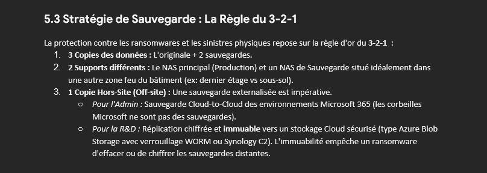
- SAE5.01 - Cluster_Hyperviseur_Salles_TP.pdf : Architecture du cluster Proxmox.
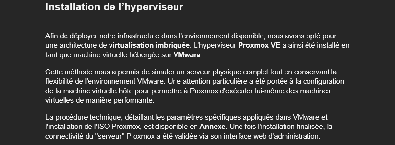
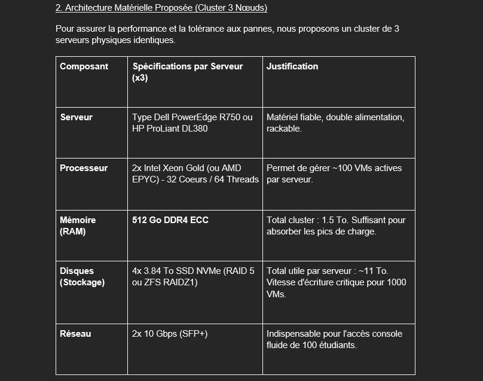
Contexte
Missions de support de niveau 1 et 2 (MCO - Maintien en Condition Opérationnelle) lors de mon stage au Centre Hospitalier de Béthune-Beuvry.
Objectifs
Identifier l'origine technique des pannes signalées par le personnel médical et appliquer des correctifs définitifs dans des délais très courts (GTR).
Problèmes rencontrés
Lors du déploiement du nouveau Dossier Patient Informatisé (DPI Dedalus C4U), de nombreuses instabilités sont apparues sur les postes clients, menaçant la continuité des soins. Le paramétrage des scanners réseau posait également des problèmes de communication.
Solutions mises en place
Méthodologie de troubleshooting en entonnoir (couches OSI). Utilisation de GLPI pour catégoriser les incidents, analyse des logs locaux, et rédaction/application de fiches réflexes (notamment pour la configuration complexe du logiciel CaptureOnTouch).
Résultats
Réduction significative du temps de traitement des tickets. La capitalisation des pannes via la documentation a permis à l'équipe de résoudre les incidents récurrents beaucoup plus vite.
Preuves
- Rapport de Stage 2026.pdf : Fiche réflexe de configuration des scanners et interface GLPI.
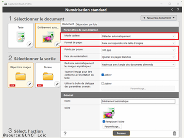
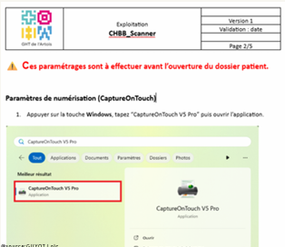
Contexte
Administration d'un domaine Windows Server gérant les comptes et postes informatiques du département R&T de l'IUT.
Objectifs
Déployer massivement des logiciels et des configurations spécifiques sans avoir à intervenir physiquement sur chaque poste client.
Problèmes rencontrés
L'installation du logiciel Paint Shop Pro 7 nécessitait des droits administrateurs et modifiait des clés de registre utilisateur (HKCU), ce qui empêchait son exécution correcte pour les étudiants.
Solutions mises en place
Développement de scripts d'automatisation en PowerShell (InstallPSP.ps1). J'ai implémenté un script s'exécutant automatiquement via les GPO à l'ouverture de session pour forcer la création de la clé de registre de validation dans la ruche de l'utilisateur courant.
Résultats
Déploiement logiciel 100% automatisé et transparent pour l'utilisateur. Gain de temps considérable pour la DSI.
Preuves
- R2.04 - Administration_Windows_Serveur.pdf : Code source complet du script PowerShell.
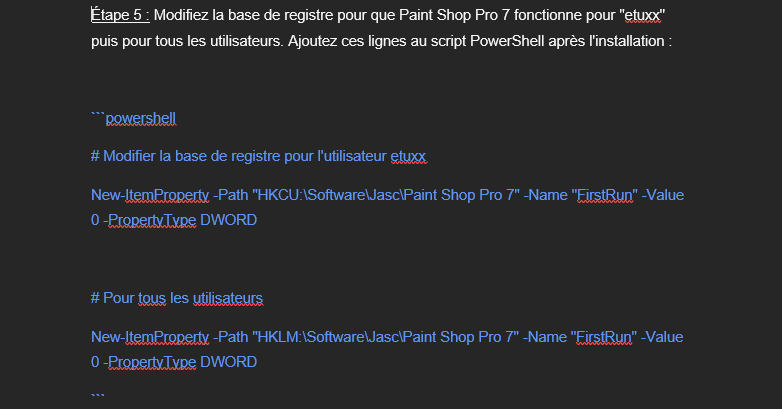
Contexte
Mise en place des services fondamentaux (Core Services) d'infrastructures pour divers projets (SAÉ 1.02, SAÉ 3.03, et maquettage Web Linux).
Objectifs
Fournir l'adressage automatique, la résolution de noms de domaine et la mise à disposition centralisée de ressources.
Problèmes rencontrés
Les requêtes DHCP ne traversent pas les routeurs par défaut. De plus, la gestion des requêtes clientes nécessitait un serveur capable d'orienter le trafic efficacement.
Solutions mises en place
Configuration de serveurs DHCP Cisco avec des agents relais (ip helper-address). Côté systèmes Linux, j'ai déployé un serveur DNS Bind9 (zones directes/inverses) ainsi qu'un serveur web Nginx agissant comme reverse-proxy.
Résultats
Les clients obtiennent leur configuration IP dynamiquement et accèdent aux ressources intranet/Internet de manière fluide.
Preuves
- SAE1.02 - Initiation_Reseaux_Informatiques.pdf : Commandes Cisco pour la création des pools DHCP.
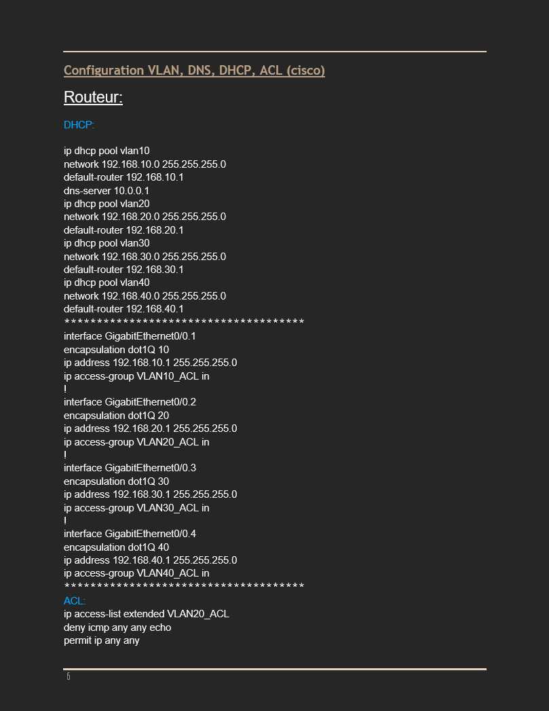
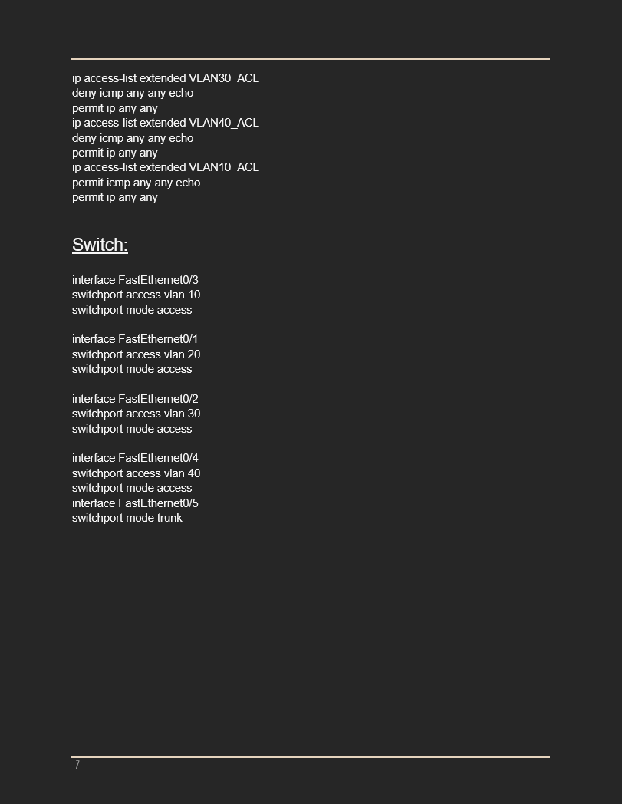
- SAE4.01 - WriteUp_Securisation_Web_DNS.pdf : Configuration de la zone DNS Bind9.
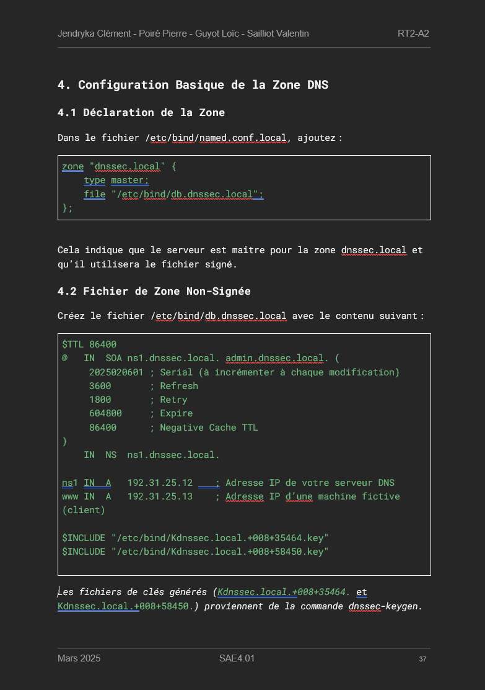
Contexte
Déploiement d'une solution de téléphonie sur IP (VoIP) et de visioconférence au sein de la pépinière d'entreprises (SAÉ 3.03).
Objectifs
Garantir la fluidité absolue des communications voix et vidéo, même lorsque le réseau est fortement sollicité par des transferts de fichiers volumineux.
Problèmes rencontrés
Les paquets UDP utilisés par la VoIP n'ont pas de mécanisme de retransmission. Des téléchargements massifs coupaient la voix des commerciaux (gigue et latence inacceptables).
Solutions mises en place
Implémentation d'une politique de Qualité de Service (QoS) sur les équipements de cœur de réseau. J'ai utilisé des ACL pour marquer le trafic lié à la voix, puis créé des Class-map et Policy-map pour appliquer une file d'attente prioritaire (Priority Queuing).
Résultats
Plus aucune coupure signalée lors des appels. Le trafic temps-réel est priorisé matériellement par le switch.
Preuves
- SAE3.03 - Pepiniere_Multi-Sites.pdf : Implémentation de la QoS (Class-map et Policy-map).
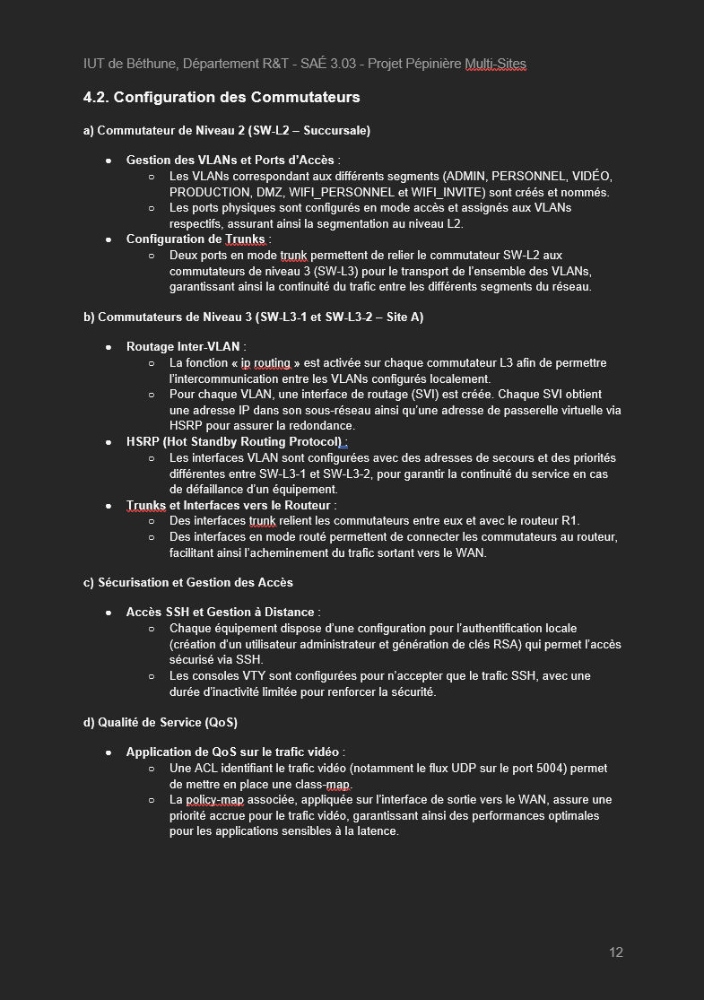
Bloc 2 : Connecter les entreprises et les usagers — Niveau 3
Contexte
Étude fondamentale des télécommunications et des dispositifs de transmission radiofréquence (SAÉ 1.03, SAÉ 3.01).
Objectifs
Comprendre la transformation de l'information en ondes électromagnétiques et interpréter leurs caractéristiques (fréquence, amplitude, phase).
Problèmes rencontrés
Les signaux réels captés dans l'air (4G/LTE, GSM) sont pollués par le bruit de fond thermique et les interférences, rendant leur analyse directe complexe.
Solutions mises en place
J'ai utilisé des environnements de simulation (Simulink/Matlab) pour isoler des signaux purs. Ensuite, je suis passé à la pratique avec un analyseur de spectre matériel (MCS Spectrum Analyzer) couplé à des antennes directionnelles HyperLOG pour scanner l'environnement hertzien.
Résultats
Maîtrise de la caractérisation d'un signal. Capacité à distinguer une porteuse utile du bruit ambiant, et à identifier le type de modulation utilisé.
Preuves
- SAE1.03 - Decouverte_Dispositif_Transmission.pdf : Modélisations graphiques des signaux sous Matlab/Simulink.
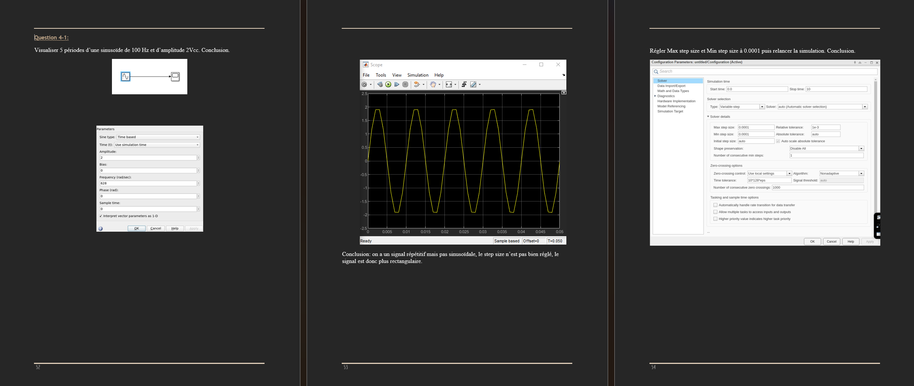
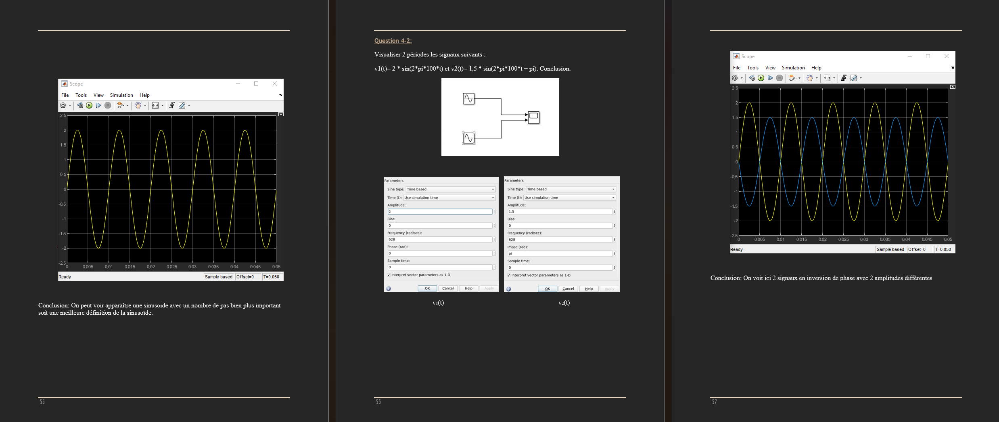
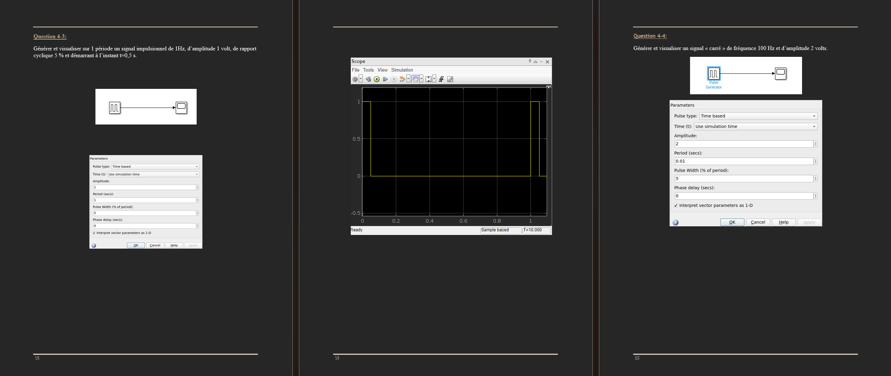
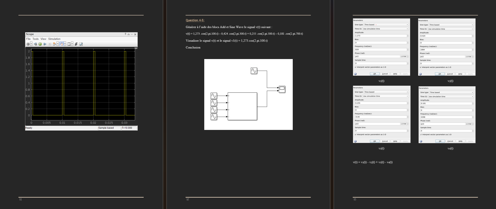
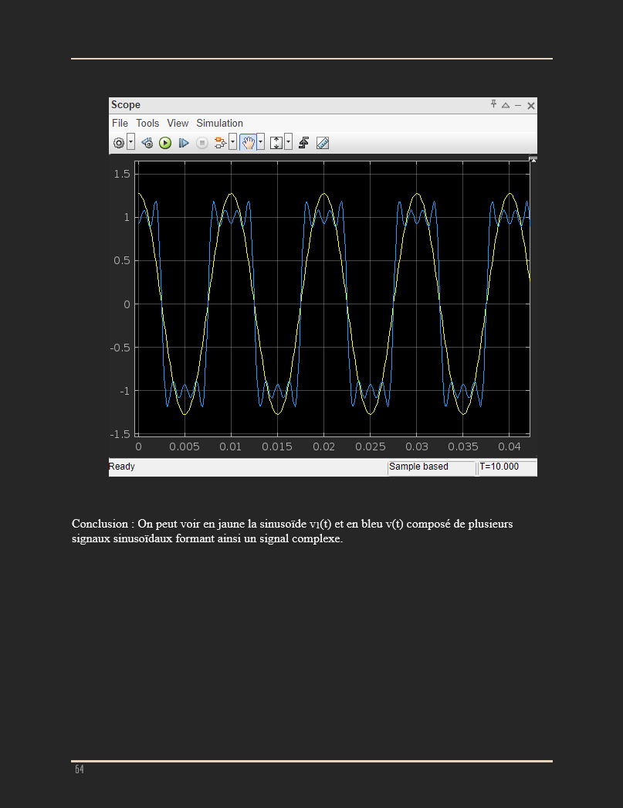
- SAE3.01 - Etude_Transmission_Signaux.pdf : Captures de l'analyseur de spectre isolant les fréquences GSM et LTE.
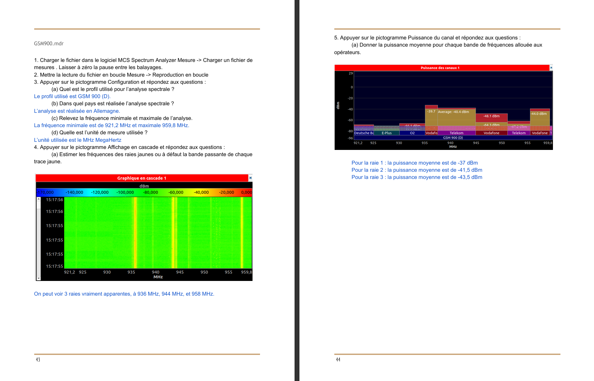
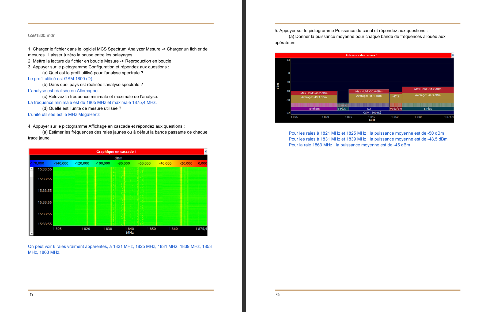
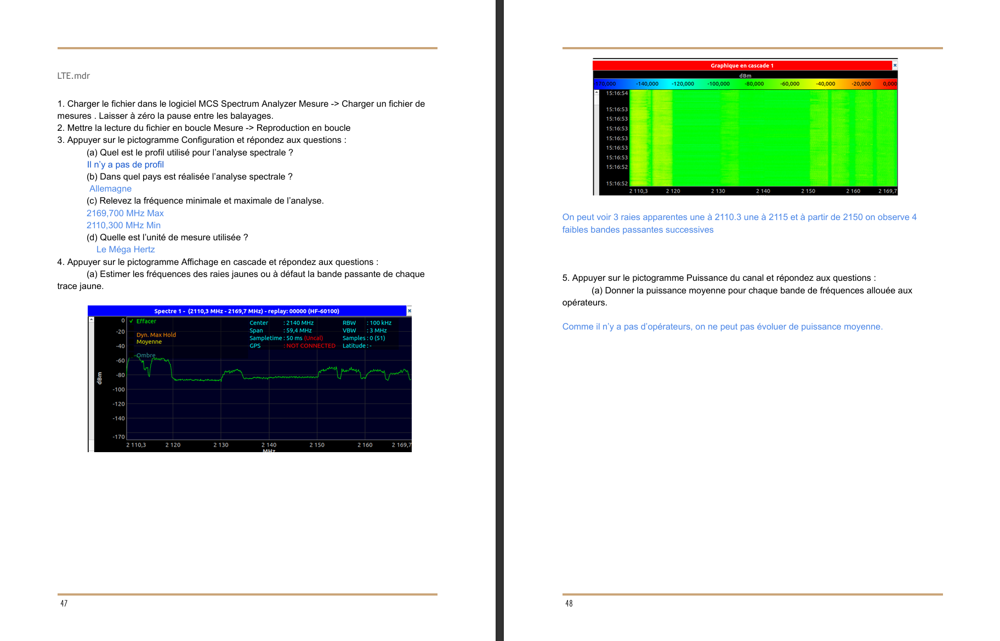
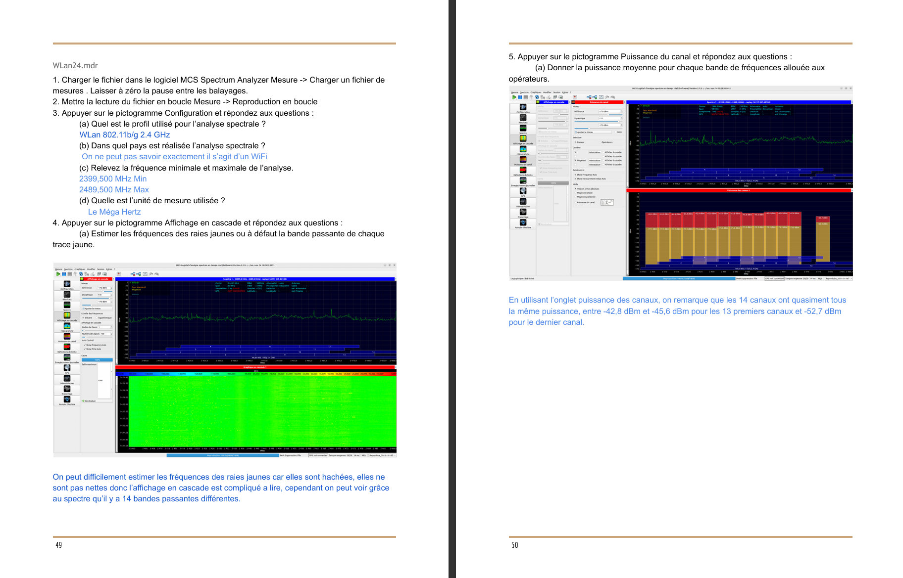
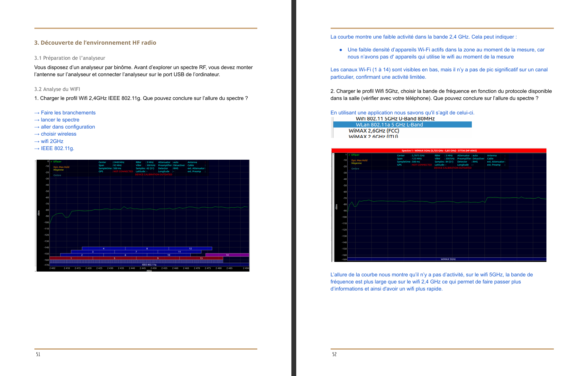
Contexte
Projet stratégique de déploiement de la fibre optique (FTTH - Fiber To The Home) pour la commune rurale de Locon.
Objectifs
Étudier la faisabilité technique du raccordement Très Haut Débit d'un territoire, analyser le marché des FAI, et concevoir une offre de services (domotique, santé).
Problèmes rencontrés
Expliquer le fonctionnement de l'infrastructure optique (du NRO jusqu'à la PTO) à des élus locaux sans les noyer sous le jargon technique, tout en justifiant les coûts de génie civil.
Solutions mises en place
J'ai réalisé un audit de couverture via les données de l'ARCEP, identifiant les armoires de rue (PMZ). J'ai packagé l'offre avec des services additionnels : Wi-Fi 6 Mesh, téléalarme pour le maintien à domicile des séniors, et anticipation du 10 G-PON.
Résultats
Production d'un dossier complet et vulgarisé, démontrant que la fibre optique est un levier de désenclavement numérique et de santé publique.
Preuves
- Communication - Deploiement_Fibre_FTTH_Locon.pdf : Analyse des PMZ locaux et présentation des services domotiques.
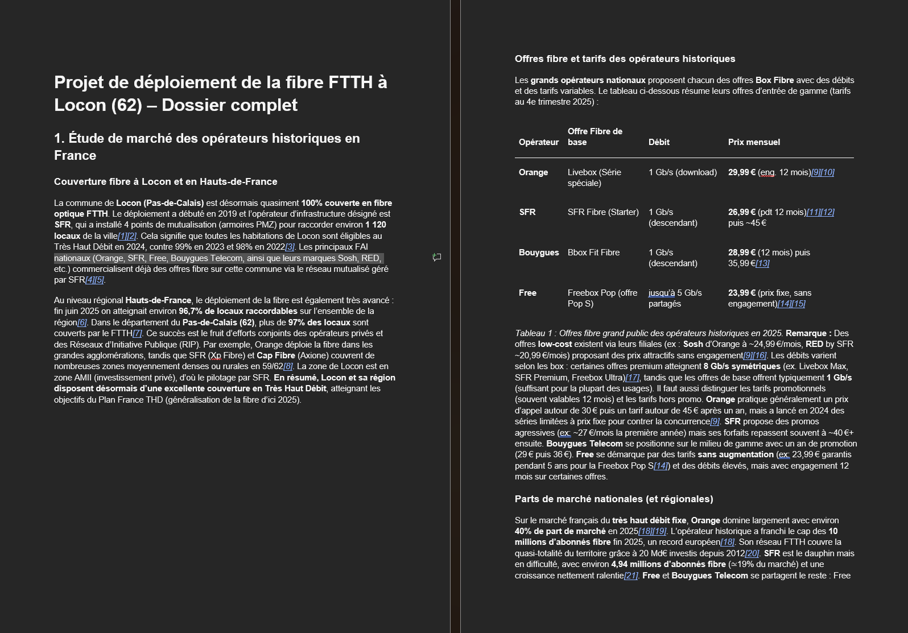
Contexte
Mise en pratique des techniques de communication sans fil avancées dans le cadre de la SAÉ 3.01.
Objectifs
Émettre et recevoir un véritable flux multimédia par voie hertzienne en maîtrisant la chaîne de transmission.
Problèmes rencontrés
Synchroniser parfaitement l'émetteur et le récepteur, et s'affranchir des limitations des composants électroniques physiques pour tester plusieurs modulations.
Solutions mises en place
Exploitation de la technologie SDR (Radio Logicielle) avec des modules ADALM-PLUTO. J'ai développé sous GNURadio des diagrammes de blocs logiciels configurant le taux d'échantillonnage et la modulation (FM/RDS).
Résultats
Création réussie d'une station de diffusion locale transmettant en temps réel un streaming audio/vidéo clair.
Preuves
- SAE3.01 - Etude_Transmission_Signaux.pdf : Graphes GNURadio et diffusion HF avec ADALM-PLUTO.
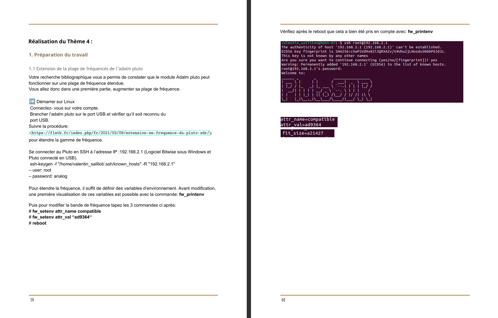
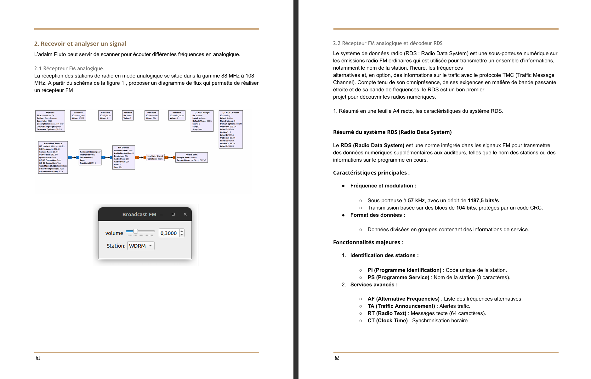
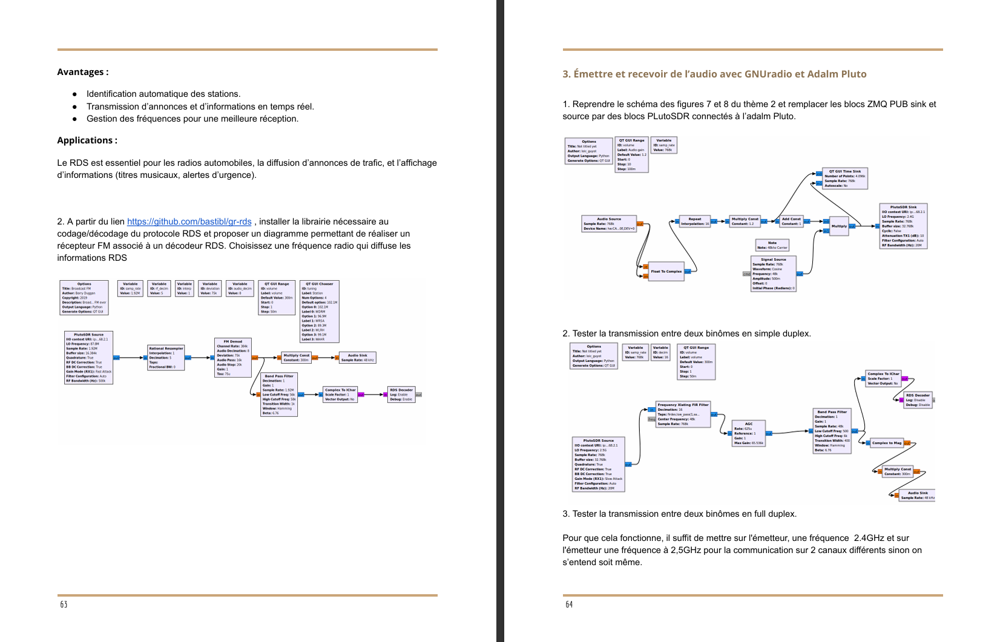
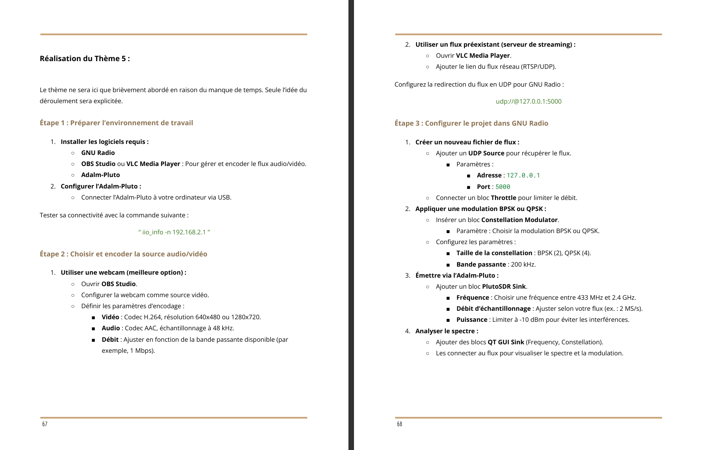
Contexte
Intégration des équipements terminaux pour les employés de la Pépinière d'entreprises (SAÉ 2.01).
Objectifs
Fournir aux collaborateurs des téléphones IP et des caméras de sécurité, tout en minimisant l'impact sur le câblage électrique des bâtiments.
Problèmes rencontrés
Tirer une ligne électrique 220V à côté de chaque prise réseau (plafond) engendre des coûts de câblage colossaux et pose des problèmes de sécurité électrique.
Solutions mises en place
Étude et implémentation du PoE (Power over Ethernet). Dimensionnement des commutateurs pour injecter un courant continu (normes 802.3af/at). Configuration du serveur de téléphonie (SIP) et des flux vidéo (RTSP).
Résultats
Infrastructure centralisée : les périphériques s'alimentent et communiquent via un unique câble RJ45, ondulés directement depuis la baie serveur.
Preuves
- SAE2.01 - Pepiniere_Entreprises_Infra.pdf : Étude technique sur les normes PoE et configuration de la téléphonie.
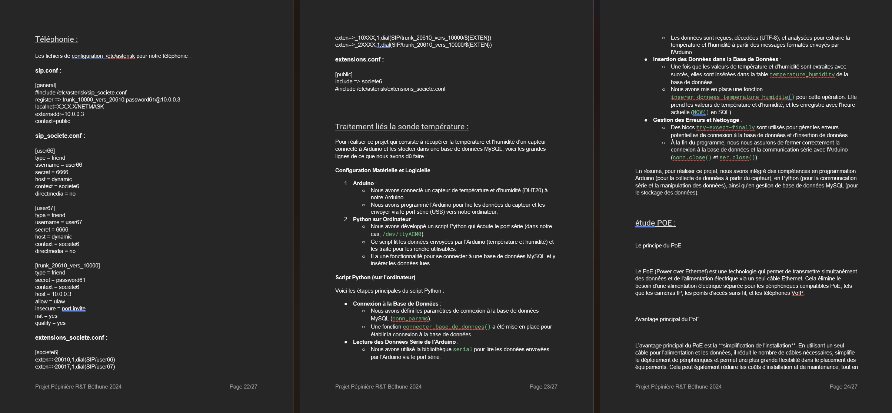
Contexte
Interconnexion des agences distantes (SAÉ 3.03) et conception réseau pour la Fédération Française de Football (Projet Interpulse).
Objectifs
Rendre les données parfaitement illisibles et inaltérables lorsqu'elles traversent des réseaux non maîtrisés (Internet public ou ondes radio).
Problèmes rencontrés
Par défaut, le trafic circule "en clair", exposant l'entreprise au sniffing (vol de mots de passe, interception de données biométriques sportives).
Solutions mises en place
Déploiement d'un tunnel GRE encapsulé dans IPsec (phases ISAKMP, Transform-sets AES) pour le WAN. Pour le projet FFF, j'ai architecturé une infrastructure 5G Privée, utilisant le "Network Slicing" pour créer un canal hermétique dédié aux flux médicaux.
Résultats
Un canal de communication de qualité militaire a été établi. La confidentialité des échanges est totale, rendant toute tentative d'écoute inexploitable.
Preuves
- SAE3.03 - Pepiniere_Multi-Sites.pdf : Scripts CLI de configuration IPsec.
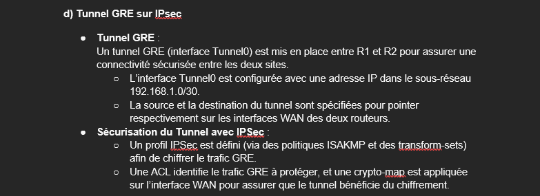
- Communication - Projet_INTERPULSE_5G_FFF.pdf : Conception logique de la "bulle 5G privée" et Network Slicing.
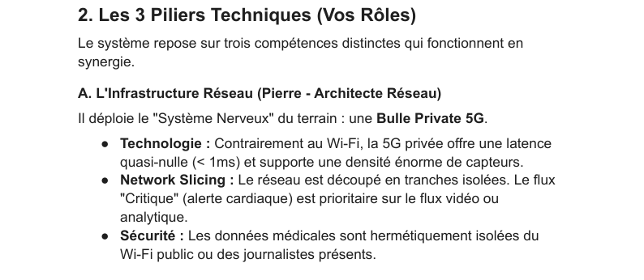
Bloc 3 : Créer des outils et applications — Niveau 3
Contexte
Conception d'un site web intranet et administration automatisée de serveurs Windows.
Objectifs
Créer des interfaces web interactives et remplacer les processus d'administration manuels chronophages par des scripts fiables.
Problèmes rencontrés
Le HTML statique ne gère pas l'authentification. L'exécution répétitive de commandes système augmente le risque d'erreur de frappe pouvant corrompre le système.
Solutions mises en place
Développement de la logique serveur en PHP (gestion des sessions, redirections). Côté système, développement de scripts d'administration en PowerShell manipulant l'Active Directory et le système de fichiers.
Résultats
Application web dynamique avec login sécurisé, et outils d'administration en ligne de commande offrant un gain de temps massif.
Preuves
- SAE4.01 - WriteUp_Securisation_Web_DNS.pdf : Code PHP gérant le login et la logique de redirection.
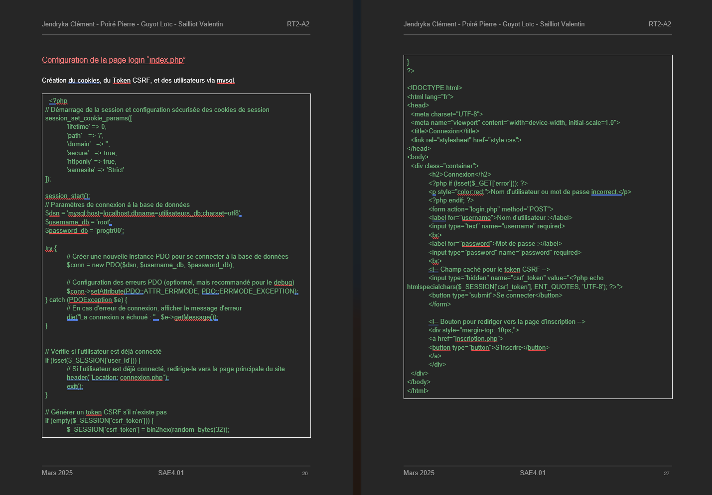
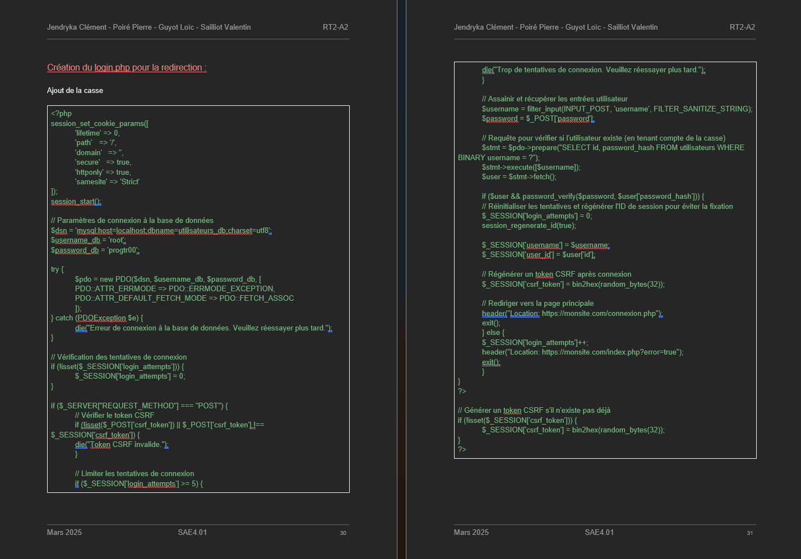
- R2.04 - Administration_Windows_Serveur.pdf : Scripts PowerShell commentés.
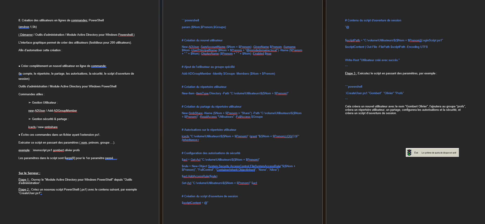
Contexte
Développement du backend de l'application web d'entreprise et du système IoT de collecte de température de la pépinière.
Objectifs
Structurer l'information pour qu'elle soit stockée, recherchée et modifiée de manière optimisée et sécurisée.
Problèmes rencontrés
Le stockage en fichiers plats est lent et vulnérable aux pertes ou accès concurrents. Il fallait également se prémunir contre les failles d'injection SQL.
Solutions mises en place
Conception d'une base de données relationnelle sous MySQL/MariaDB (MCD/MLD). Interfaçage sécurisé des scripts Python et des pages PHP avec des requêtes préparées.
Résultats
Centralisation robuste de la donnée. L'application traite rapidement des milliers de relevés IoT avec garantie d'intégrité (ACID).
Preuves
- SAE4.01 - WriteUp_Securisation_Web_DNS.pdf : Commandes SQL de création de base et tables.
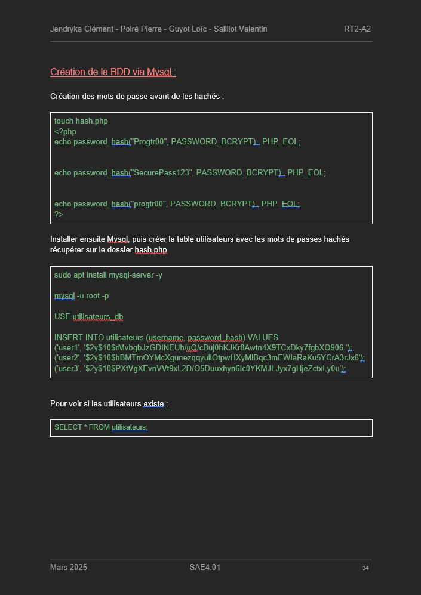
- SAE2.01 - Pepiniere_Entreprises_Infra.pdf : Interfaçage du script Python avec le capteur Arduino et la base MySQL.
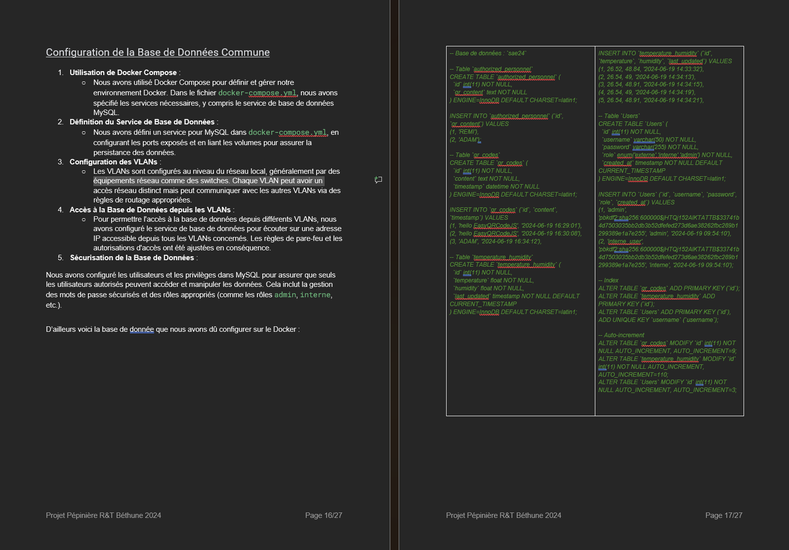
Contexte
Mise à disposition des environnements de TP virtuels (SAÉ 501) et hébergement du portail web de l'entreprise.
Objectifs
Installer et paramétrer les moteurs logiciels pour rendre les services accessibles aux utilisateurs finaux via un navigateur internet.
Problèmes rencontrés
Un serveur web mal configuré consomme énormément de RAM lors des pics de charge. De plus, l'accès à une interface d'hyperviseur brute est trop complexe pour des étudiants.
Solutions mises en place
Déploiement de Nginx sur Ubuntu, réputé pour son architecture asynchrone peu gourmande. Déploiement de l'interface GUI native de Proxmox VE avec ajustement des droits RBAC pour que chaque utilisateur soit cloisonné sur ses propres ressources.
Résultats
Les portails applicatifs sont stables, performants et offrent une expérience utilisateur fluide.
Preuves
- SAE4.01 - WriteUp_Securisation_Web_DNS.pdf : Configuration des Virtual Hosts Nginx sur Ubuntu.
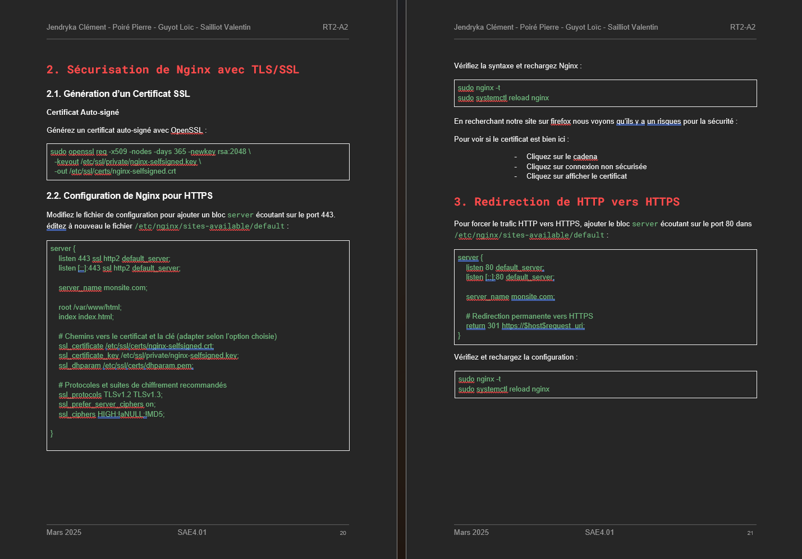
- SAE5.01 - Cluster_Hyperviseur_Salles_TP.pdf : Présentation de l'interface Web Proxmox pour l'accès étudiant.
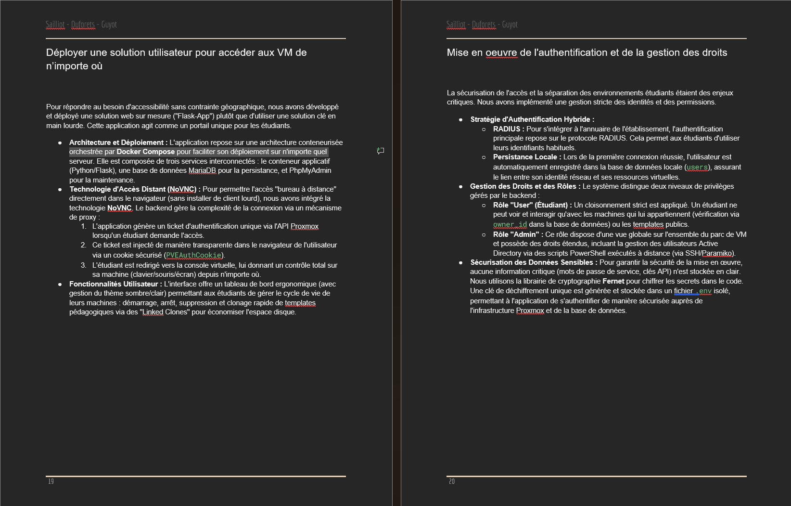
Contexte
Exploitation IoT (Internet of Things) dans les locaux de la pépinière d'entreprises (SAÉ 2.01).
Objectifs
Transformer des données brutes de capteurs matériels en dashboards visuels pour la prise de décision.
Problèmes rencontrés
Le capteur de température Arduino génère un flux continu de données au format texte brut, indigeste et impossible à analyser humainement pour y déceler des anomalies.
Solutions mises en place
Mise en place d'un pipeline de traitement via Jupyter Notebook et Python (Pandas). Les scripts importent le flux, nettoient les valeurs aberrantes et utilisent Matplotlib pour tracer des courbes analytiques.
Résultats
Création d'un outil d'analyse décisionnelle automatisé permettant la visualisation instantanée des variations thermiques des salles serveurs.
Preuves
- SAE2.01 - Pepiniere_Entreprises_Infra.pdf : Intégration Arduino-Python et utilisation des notebooks Jupyter pour le tracé.
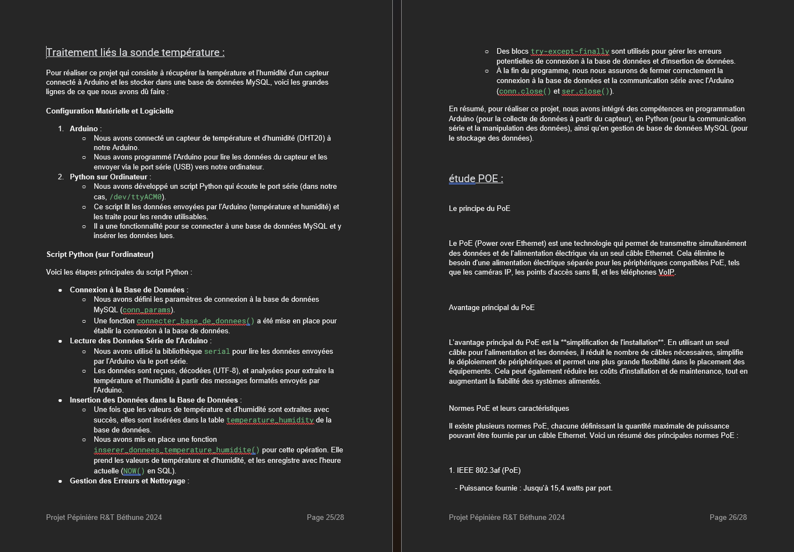
Contexte
Sécurisation périmétrique et applicative des serveurs web exposés sur Internet.
Objectifs
Garantir que les échanges entre le client et le serveur ne puissent pas être lus ou interceptés (Man-in-the-Middle).
Problèmes rencontrés
Le trafic HTTP est en clair par défaut. L'utilisation de certificats auto-signés génère des alertes de sécurité bloquantes sur les navigateurs web récents.
Solutions mises en place
Durcissement cryptographique : génération de clés et certificats SSL/TLS, configuration d'une redirection forcée HTTP vers HTTPS sous Nginx, et injection d'en-têtes de sécurité (HSTS).
Résultats
Application certifiée "Sécurisée", trafic chiffré de bout en bout annihilant les attaques de type MitM.
Preuves
- SAE4.01 - WriteUp_Securisation_Web_DNS.pdf : Scripts OpenSSL et configuration HTTPS Nginx.
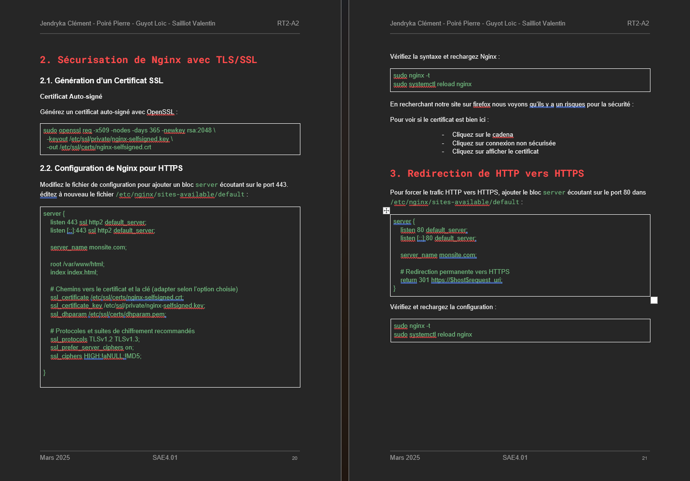
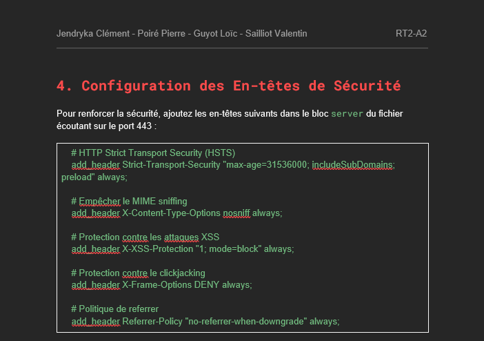
Contexte
Projet majeur de transition logicielle au Centre Hospitalier de Béthune-Beuvry lors de mon stage.
Objectifs
Assurer l'intégration, le déploiement sur le terrain et l'appropriation par les utilisateurs du nouveau système d'information critique (DPI).
Problèmes rencontrés
Résistance au changement du personnel médical et présence inévitable de bugs de jeunesse ("Day One") rendant l'outil difficile à utiliser.
Solutions mises en place
Gestion opérationnelle du Change Management : déploiement physique des chariots médicaux Ergotron, rédaction de manuels de procédures simplifiés, et accompagnement terrain (Le "Run") pour corriger les bugs en lien direct avec l'éditeur.
Résultats
Adoption réussie du nouveau logiciel (Dedalus C4U) sans rupture du service de soins grâce au support de proximité.
Preuves
- Rapport de Stage 2026.pdf : Suivi de la bascule DPI et procédure de mise en service des chariots Ergotron.
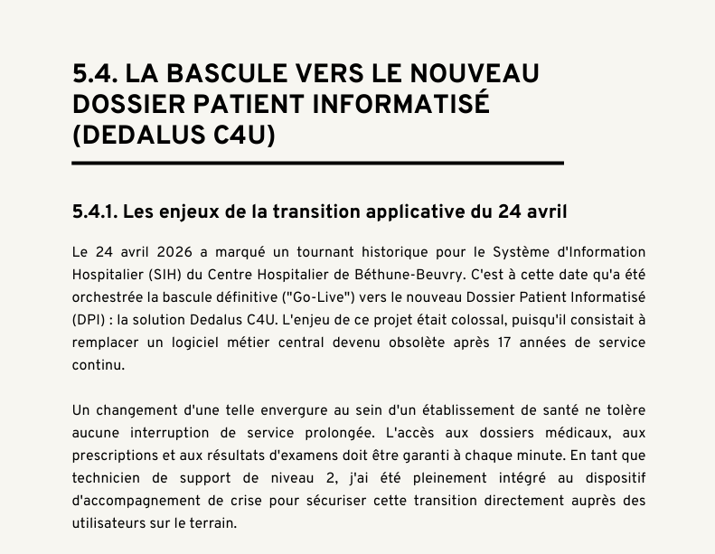
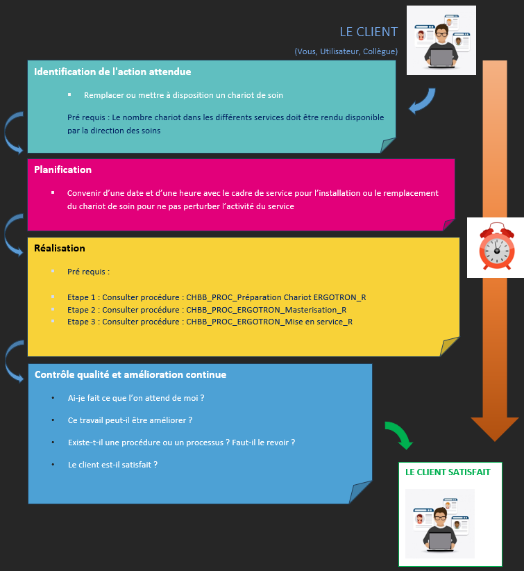
Bloc 4 : Administrer / Gérer un projet — Niveau 2
Contexte
Projet "Scale-Up 80", conception des salles de TP virtuelles (SAÉ 501), et orchestration de la pépinière d'entreprises.
Objectifs
Transformer un cahier des charges en solution livrée dans les temps en coordonnant efficacement une équipe de techniciens.
Problèmes rencontrés
Dans un travail de groupe, l'absence de pilotage crée des goulots d'étranglement (ex: le déploiement réseau bloque les développeurs) et menace le respect des délais.
Solutions mises en place
Adoption d'un rôle de chef de projet agile. Découpage en lots, élaboration d'un Diagramme de Gantt pour suivre le chemin critique, et création d'une Matrice RACI pour responsabiliser chaque membre de l'équipe.
Résultats
Une gestion du temps millimétrée. Les conflits ont été évités, permettant de livrer des architectures 100% fonctionnelles le jour de l'évaluation finale.
Preuves
- SAE5.01 - Cluster_Hyperviseur_Salles_TP.pdf : Diagramme de Gantt et matrice RACI et établissement rigoureux du calendrier et des jalons.
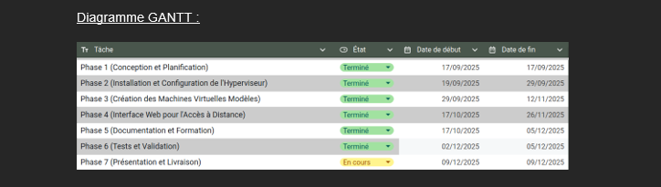
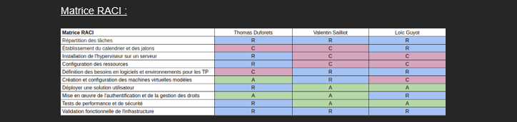
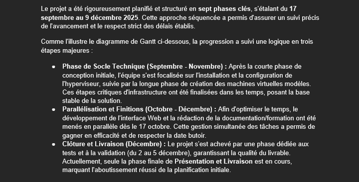
Contexte
Dimensionnement matériel pour 1000 VMs (SAÉ 501) et choix des investissements IT pour le plan stratégique "Scale-Up 80".
Objectifs
Produire une architecture technique ultra-performante mais financièrement réaliste (respect du budget CAPEX/OPEX de l'institution).
Problèmes rencontrés
Sous-dimensionner les serveurs rend les travaux pratiques inutilisables, mais sur-dimensionner fait exploser la facture (notamment le coût critique du stockage SSD NVMe).
Solutions mises en place
Travail d'ingénierie d'avant-vente : calcul rigoureux des besoins CPU/RAM/Disque. Proposition d'un cluster hyperconvergé de 3 serveurs Dell (1.5 To de RAM totale) et justification de l'usage des *Linked Clones* pour diviser par 10 le coût du stockage.
Résultats
Présentation d'un budget validé et justifié à l'euro près, prouvant le meilleur ratio performance/prix du marché.
Preuves
- SAE5.01 - Cluster_Hyperviseur_Salles_TP.pdf : Tableau détaillé de l'architecture matérielle (BOM).
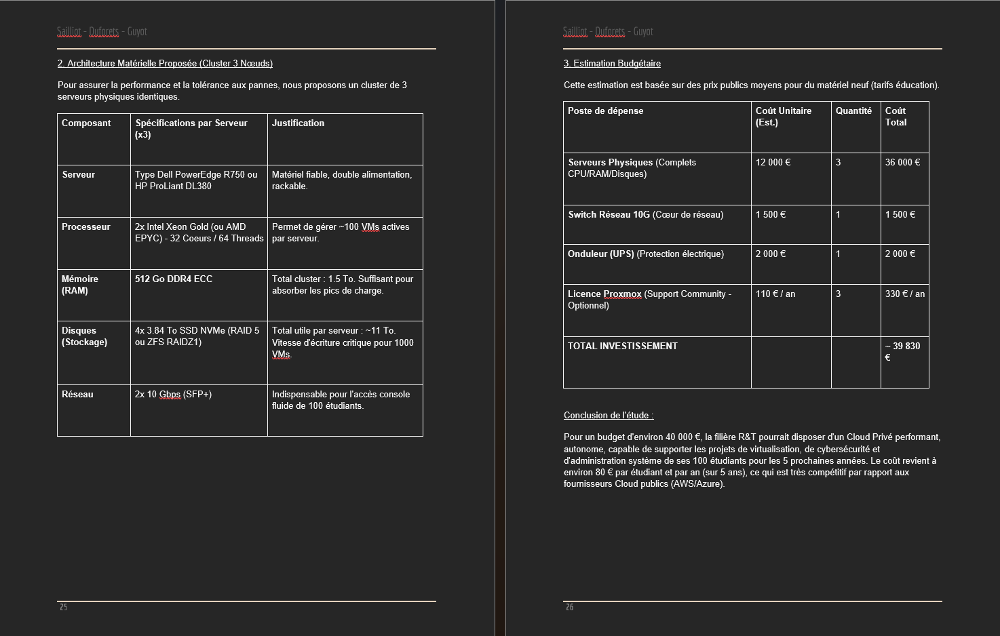
- SAE5.02 - Conception_SI_Scale-Up_80.pdf : Analyse économique comparative (Cloud vs Hébergement Local).
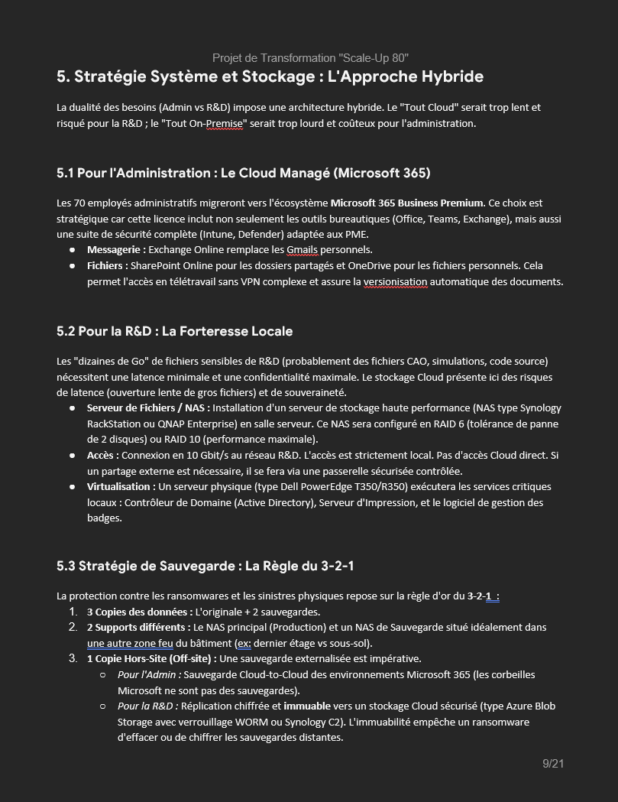
Contexte
Audit légal du site e-commerce Décathlon.fr et conception de datacenters pour les projets d'infrastructures.
Objectifs
Aligner les projets informatiques avec les lois impératives sur les données personnelles (RGPD), l'accessibilité (RGAA) et la réduction de l'empreinte carbone (Green IT).
Problèmes rencontrés
De nombreux sites violent les règles de consentement (amendes CNIL) et excluent les utilisateurs malvoyants. Écologiquement, les serveurs matériels dédiés surconsomment inutilement de l'électricité.
Solutions mises en place
Audit méthodique des traceurs web, mettant en évidence une rétention illégale de cookies (5 ans au lieu de 13 mois), et calcul du score d'accessibilité. Côté infra, argumentation sur la mutualisation logicielle (Proxmox) pour éviter l'achat massif de serveurs.
Résultats
Production de recommandations de remédiations légales et intégration d'une dimension éco-responsable limitant l'empreinte carbone des datacenters.
Preuves
- R6.02 - Audit_Juridique_RGPD_Decathlon.pdf : Analyse juridique des traceurs et de l'accessibilité.
- SAE5.01 - Cluster_Hyperviseur_Salles_TP.pdf : Volet Développement durable et virtualisation.
Contexte
Soutenances stratégiques pour le déploiement de la fibre FTTH (Mairie de Locon) et la vente de l'architecture INTERPULSE à la FFF.
Objectifs
Transformer une documentation d'ingénierie aride en un discours persuasif et vendeur, adapté à des décideurs non-informaticiens.
Problèmes rencontrés
Expliquer le fonctionnement d'un tunnel IPsec ou d'un OLT à un Maire ou un directeur sportif fait instantanément perdre leur attention. Il faut traduire la technique en avantages.
Solutions mises en place
Adoption de techniques de pitch executive. Pour Interpulse, j'ai créé une marque forte, un slogan ("Programmé pour gagner") et un Storytelling simulant le piratage d'un joueur. Pour Locon, l'offre a été packagée autour de la télémédecine et du maintien à domicile.
Résultats
Approbation totale des jurys, prouvant que la capacité à vulgariser permet de démontrer que la technologie est une solution au service du business et de la vie locale.
Preuves
- Communication - Projet_INTERPULSE_5G_FFF.pdf : Conception du Storytelling et du slogan.
- Communication - Deploiement_Fibre_FTTH_Locon.pdf : Script oral minuté et structuré pour la vulgarisation.
Bloc 5 : Surveiller et Sécuriser un SI — Niveau 2
Contexte
Mission de Red Teaming (Test d'intrusion offensif) en mode "Boîte Grise" pour la société Bug&Blog Ltd.
Objectifs
Éprouver la résistance de l'infrastructure exposée sur Internet en se glissant dans la peau d'un attaquant réel, afin d'identifier les failles exploitables.
Problèmes rencontrés
La surface d'attaque était large. Il fallait détecter les portes ouvertes et surtout prouver, sans détruire la production du client, qu'elles menaient à une compromission totale (accès root).
Solutions mises en place
Cartographie du périmètre et exploitation des vulnérabilités : détection d'un serveur FTP configuré en accès anonyme avec droits d'écriture, et exploitation d'un noyau Linux obsolète permettant une élévation de privilège. Classification de ces failles selon le standard international CVSSv3.
Résultats
Livraison d'un rapport de pentest professionnel offrant au DSI une feuille de route claire pour patcher en urgence son noyau Linux (CVSS 8.5) et refermer la brèche FTP (CVSS 10.0).
Preuves
- SAE5.Cyber - Pentest_BugAndBlog_Ltd.pdf : Détail de l'exploitation et tableau récapitulatif des vulnérabilités CVSS.
Contexte
Maquettage des protocoles de base de l'Internet (DNS) et missions de terrain lors de mon stage hospitalier.
Objectifs
Appliquer le principe de "Moindre Privilège" et de défense en profondeur en verrouillant les configurations par défaut des équipements (Hardening).
Problèmes rencontrés
Le protocole DNS originel est naïf et vulnérable à l'empoisonnement de cache (Spoofing). Dans un hôpital, l'accès physique à l'arrière d'un switch dans un couloir peut permettre de compromettre le réseau.
Solutions mises en place
Au niveau applicatif, transformation de la zone DNS en zone signée cryptographiquement en implémentant DNSSEC (création de clés KSK/ZSK) sous Bind9. Sur le terrain hospitalier, paramétrage sécurisé du Virtual Switching Framework (VSF) sur commutateurs Aruba et utilisation de tunnels RDP chiffrés pour l'administration distante.
Résultats
L'infrastructure repousse efficacement les attaques de base. La résolution des noms de domaine est devenue infalsifiable, et les accès physiques sont sécurisés.
Preuves
- SAE4.01 - WriteUp_Securisation_Web_DNS.pdf : Configuration de DNSSEC (.key, .private et auto-validation).
- Rapport de Stage 2026.pdf : Lignes de commande CLI du VSF sur commutateur Aruba et configuration du client RDP Remmina.
Contexte
Conception logique du socle de défense pour l'infrastructure sportive FFF (Projet Interpulse) et suivi opérationnel des incidents médicaux hospitaliers.
Objectifs
Automatiser la détection d'activités malveillantes (Threat Detection) et orchestrer une réponse dynamique immédiate, tout en préservant l'intégrité des preuves (Forensics).
Problèmes rencontrés
Lors d'une cyberattaque, la vitesse de réaction humaine est trop lente. Si la base de données stockant les performances médicales des joueurs ou des patients est altérée, la valeur vitale du système est détruite.
Solutions mises en place
Architecture d'une défense active intégrant un IDS (Système de Détection d'Intrusion) sur le réseau 5G avec bannissement IP automatisé. Pour contrer l'altération des bases de données, les enregistrements de santé ont été adossées à une Blockchain assurant un hachage mathématiquement immuable.
Résultats
Création d'une forteresse numérique auto-réparatrice. L'attaque est isolée en quelques millisecondes avec une garantie d'intégrité absolue de la donnée.
Preuves
- Communication - Projet_INTERPULSE_5G_FFF.pdf : Scénario d'usage détaillant l'attaque, la détection IDS et le verrouillage Blockchain.
Contexte
Direction des choix stratégiques globaux de protection de l'information pour la transformation du SI "Scale-Up 80".
Objectifs
Sortir du bricolage technique ponctuel pour imposer un cadre formel de gouvernance de la sécurité (PSSI) applicable à l'ensemble de l'entreprise.
Problèmes rencontrés
La société souffrait d'une "Dette Technique" monumentale. L'absence de règles d'accès permettait par exemple aux secrétaires de visualiser les secrets industriels de la division Recherche & Développement, posant des risques de fuite.
Solutions mises en place
Élaboration initiale d'une Matrice des Risques pour cartographier les menaces. Conception et application du concept de "Forteresse Locale" : un VLAN dédié à la R&D, totalement imperméable au reste de l'entreprise, protégé par des ACL strictes empêchant toute communication non autorisée venant du réseau administratif.
Résultats
Ségrégation totale des environnements. Réduction massive du risque de mouvements latéraux par des malwares et alignement du SI sur les standards de l'industrie (type ISO 27001).
Preuves
- SAE5.02 - Conception_SI_Scale-Up_80.pdf : Matrice des risques, diagnostic de la dette technique, et plan de la Forteresse Locale.